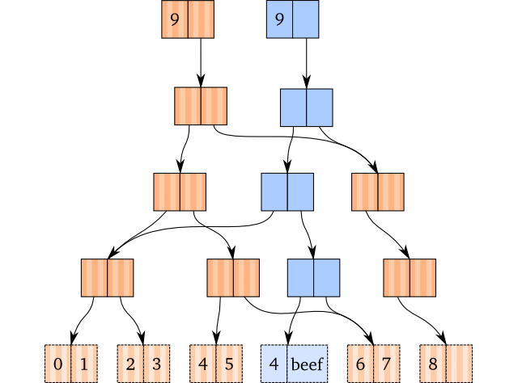

Funktionale Programmierung: Ausgewählte Kapitel
Programmierparadigmen
Ziele
Verstehen der Aussage:
Es gibt keinen Wesensunterschied zwischen Programmen und Daten.
- Verstehen des Unterschieds zwischen strikter und verzögerter Auswertung von Funktionsanwendungen.
- Grundverständnis der Implementierung funktionaler Datenstrukturen
Datenabstraktion
These:
Es gibt keinen Wesensunterschied zwischen Programmen und Daten
vgl. auch Kapitel Datenabstraktion aus Einführung in die Programmierung
1. Beispiel: Rechnen mit Punkten in der Ebene
Defintion von Punkten
- Ein Punkt in der Ebene wird durch seine x- und seine y-Koordinate bestimmt (kartesisches Koordinatensystem).
Wir tun so, als ob wir eine Funktion
make-pointzur Verfügung hätten, die einen Punkt erzeugt, z. B. so:(make-point 3 4)
Nehmen wir weiter an, es gäbe zwei Funktionen, die die x- bzw. die y-Koordinate eines Punkts zugänglich machen:
(point-x (make-point 3 4)) ;;=> 3 (point-y (make-point 3 4)) ;;=> 4
Point-Funktionen
Unter diesen Voraussetzungen könnten z. B. folgende Funktionen, die
pointsverarbeiten, definiert werden:(def add-point (fn [p1 p2] (make-point (+ (point-x p1) (point-x p2)) (+ (point-y p1) (point-y p2))))) (def distance-to-0 (fn [p] (Math/sqrt (+ (Math/pow (point-x p) 2) (Math/pow (point-y p) 2)))))
- Diese (und weitere) Funktionen können programmiert werden, ohne
- die Implementierung der Funktionen
make-point,point-xundpoint-yzu kennen - eine konkrete Repräsentation von Punkten angegeben zu haben.
- die Implementierung der Funktionen
- Frage: „Wo sind hier die Daten?”
Mögliche Implementierungen von points
;; als Datenstruktur mit defrecord (defrecord point [x y]) (def make-point ->point) (def point-x :x) (def point-y :y) ;; durch Vektoren: (def make-point (fn [x y] [x y])) (def point-x (fn [p] (get p 0))) (def point-y (fn [p] (get p 1)))
Zum Vergleich die Strukturdefinition in Racket
Willkommen bei DrRacket, Version 6.7 [3m]. Sprache: Zwischenstufe mit lambda; memory limit: 128 MB. > (define-struct point [x y]) > (define p1 (make-point 3 4)) > p1 (make-point 3 4) > (point-x p1) 3 > (point-y p1) 4 > (point? p1) #true > (point? "p1") #false
Anforderungen an die Implementierung
- Jede Implementierung, die den folgenden beiden Gleichungen genügt,
ist hinreichend:
(point-x (make-point x y)) = x
(point-y (make-point x y)) = y - Daten werden durch Konstruktions- und Selektionsfunktionen repräsentiert.
- Die oben gezeigten Implementierungen benutzen „immerhin“ in der Sprache eingebaute Datenstrukturen (Records bzw. Listen) sowie die ganzen Zahlen.
- Im zweiten Beispiel kommen wir ganz ohne solche Datenstrukturen aus.
- Dort wird gezeigt, dass nicht nur „höher wertige“ Datenstrukturen sondern auch elementare Daten durch Funktionen dargestellt werden können.
2. Beispiel: Listen
- Lisp-Sprachen stellen üblicherweise
- eine Funktion zum Erzeugen einer Liste (
cons) sowie - zwei Funktionen zum Zugriff auf die beiden Komponenten einer
Liste bereit:
first- liefert – angewendet auf eine nicht leere Liste – das erste Element.
rest- liefert – angewendet auf eine nicht leere Liste – die Restliste.
- eine Funktion zum Erzeugen einer Liste (
- Der Zusammenhang zwischen
cons,firstundrestkann durch die folgenden Gleichungen beschrieben werden:
(first (cons elem liste)) = elem
(rest (cons elem liste)) = liste
(vgl. auch Symbolische Ausdrücke in Racket oder Clojure)
Implementierung von Listen durch Funktionen …
Um Namenskollisionen mit den existierenden Standardfunktionen zu vermeiden, werden im folgenden alternative Namen verwendet:
cnsstattconsfststattfirstrststattrest
… in Racket
(define cns (lambda [x y] (let [(dispatch (lambda [m] (cond [(= m 0) x] [(= m 1) y] [else (error "Argument not 0 or 1 -- CNS")])))] dispatch))) (define fst (lambda [z] (z 0))) (define rst (lambda [z] (z 1))) (define is-empty? (lambda [z] (equal? z empty))) ;; Tests: (= (fst (cns 1 empty)) 1) (= (fst (cns 1 (cns 2 empty))) 1) (= (fst (rst (cns 1 (cns 2 empty)))) 2) (is-empty? empty) (not (is-empty? (cns 1 empty)))
Erläuterungen
- Die Benutzung der Funktionen hat nichts mehr mit einem intuitiven Verständnis von Daten zu tun.
- Es muss nur gezeigt werden, dass die Implementierung die oben
genannten Gleichungen erfüllt:
- Ein Ausdruck
(cns x y)liefert die lokal definierte Funktiondispatchals Resultat, die ein Argument akzeptiert und entwederxoderyzurückgibt je nachdem, ob das Argument 0 oder 1 ist. - Entsprechend ist der Ausdruck
(fst z)so definiert, dass er die Funktionzauf 0 anwendet. D. h. wennzeine durch(cns x y)erzeugte Funktion ist, dann liefert die Anwendung vonzauf 0x. Damit ist gezeigt, dass gilt:
(fst (cns x y)) = x - Eine ähnliche Argumentation kann für den Zusammenhang zwischen
cnsundrstgeführt werden.
- Ein Ausdruck
… in Clojure
(def cns (fn [x y] (let [dispatch (fn [m] (cond (= m 0) x (= m 1) y :else (throw (Exception. "Argument not 0 or 1 -- CNS"))))] dispatch))) (def frst (fn [z] (z 0))) (def rst (fn [z] (z 1))) (def is-empty? (fn [z] (= z ())))
Benutzung
Die Funktionen können wie die Clojure-Standardfunktionen benutzt werden:
;; Benutzung der neuen Implementierung von Listen: (def sum (fn [lon] (cond (is-empty? lon) 0 :else (+ (fst lon) (sum (rst lon)))))) (deftest test-sum (is (= 0 (sum ()))) (is (= 12 (sum (cns 7 (cns 3 (cns 2 ())))))))
… in SML
datatype lst = F of int->lst | I of int | E val el = fn (I x) => x val rl = fn (F x) => x val em = fn E => true | _ => false val empty = fn (x) => E; val cns = fn (x, y) => let val dispatch = (fn (m) => if m=0 then I x else F y) in dispatch end val fst = fn z => el (z 0) val rst = fn z => rl (z 1) val isEmpty = fn (l) => em (l 0) (* Tests:*) val l1 = cns(1, empty) val test0 = fst (cns (1, empty)) = 1 val test1 = fst (cns (1, cns (2, empty))) = 1 val test2 = fst (rst (cns (1, cns (2, empty)))) = 2 val test3 = isEmpty empty val test4 = not (isEmpty l1) fun sum l = if isEmpty l then 0 else (fst l) + (sum (rst l)); (* Tests:*) val test5 = sum (cns (1, cns (2, empty))) = 3 val test6 = sum empty = 0
Alternative Implementierung von Listen durch Funktionen
3. Beispiel: Natürliche Zahlen als rekursive Datenstruktur
Definition eines Datentyps für natürliche Zahlen
Rekursive Definition der natürlichen Zahlen
- Mathematisch können die natürlichen Zahlen folgendermaßen definiert
werden:
- \(0\) ist eine natürliche Zahl.
- Wenn \(n\) eine natürliche Zahl ist, dann ist auch \(succ(n)\) eine natürliche Zahl.
- Wir definieren also eine Konstante (\(0\)) und eine
Nachfolgeroperation
(\(succ\)). Der Term \(succ(succ(succ(0)))\) entspricht dann der \(3\), ohne dass wir die \(3\) als Konstante einführen müssen. - Durch die Prämisse im zweiten Teil der Definition ist diese rekursiv.
- In Clojure-Notation könnte die Definition lauten:
zeroist eine natürliche Zahl.(succ n)ist eine natürliche Zahl, wennneine natürliche Zahl ist.
- Um Verwechslungen mit den in Clojure eingebauten Zahlen zu vermeiden,
wird hier die Konstante
zeroanstelle von \(0\) verwendet.
Clojure-Definitionen für zero und succ
Konstanten sind u.a. dadurch gekennzeichnet, dass sie zu sich selbst ausgewertet werden. Für die Konstante
zerokönnen wir das durch die folgende Definition erreichen:(def zero 'zero)
- Die Eingabe von zero im Interaktionsfenster liefert dann
zero. Da wir in unserer abstrakten, rekursiven Definition für andere natürliche Zahlen nur
succ-Terme haben, soll auch ein Ausdruck(succ (succ zero))zu sich selbst ausgewertet werden. Dies ist durch folgende Definition zu erreichen:(def succ (fn [n] (list 'succ n)))
- Die Auswertung von
(succ (succ (succ zero)))liefert damit(succ (succ (succ zero))).
Der abstrakte Datentyp Nat
Mit den Definitionen für
zeroundsucchaben wir quasi einen neuen Datentyp geschaffen, den wir Nat nennen wollen.(def zero 'zero) ;; succ: Nat -> Nat (def succ (fn [n] (list 'succ n))) (deftest test-succ (is (= (succ zero) (succ zero))) (is (= (succ (succ zero)) (succ (succ zero)))))
- Mithilfe dieses Datentyps können wir Funktionen definieren, die z.B. natürliche Zahlen (d.h. Exemplare von Nat) als Ergebnis liefern.
Anwendung des Datentyps Nat
Beispiel: Zählen der Elemente einer Liste
Gemäß den Regeln für natürliche Rekursion ergibt sich folgende Schablone:
;; zaehlt die Anzahl der Elemente ihres Arguments ;; countElements: (list-of any) -> Nat (def countElements (fn [lst] (cond (empty? lst) ... :else ... (first lst) ... (countelements (rest lst)) ...))) (deftest test-countElements (is (= (countElements () ) zero)) (is (= (countElements '(19 27 36)) (succ (succ (succ zero))))))
Die Funktion countElements
Wenn die Liste nicht leer ist, ist das Resultat der Nachfolger der Anwendung von
countElementsauf die Restliste.;; zaehlt die Anzahl der Elemente ihres Arguments ;; countElements: (list-of any) -> Nat (def countElements (fn [lst] (cond (empty? lst) zero :else (succ (countElements (rest lst)))))) (deftest test-countElements (is (= (countElements () ) zero)) (is (= (countElements '(19 27 36)) (succ (succ (succ zero))))))
Definition weiterer Operationen für Nat
Die Operationen pred und plus
- Die Operation \(succ\) ermöglicht es bisher nur (vorwärts) zu zählen.
- Wir definieren zwei weitere Operationen zur
- Ermittlung des Vorgängers einer natürlichen Zahl: \(pred\)
- Addition von zwei natürlichen Zahlen: \(plus\)
- Die Definitionen nehmen wir dadurch vor, dass wir die
Wechselwirkungen der neuen Operationen mit den Basisoperationen \(0\)
und \(succ\) zunächst durch Gleichungen beschreiben.
- Für \(pred\) gelte (mit \(n \in \textbf{Nat}\)): \[\begin{aligned} pred(succ(n)) & = n \\ pred(0) & \ \mathrm{undefiniert} \end{aligned}\]
- Für \(plus\) gelte (mit \(n, m \in \textbf{Nat}\)): \[\begin{aligned} plus(0, n) & = n \\ plus(succ(n), m) & = succ(plus(n, m)) \end{aligned}\]
Prädikat zero?
Beide Definitionen basieren auf einer Fallunterscheidung. Um sie in entsprechende Clojure-Definitionen zu übertragen, ist es sinnvoll, zunächst ein Prädikat
=zero?zu definieren, das feststellt, ob sein Argumentzeroist:;; prueft, ob ihr Argument zero ist. ;; =zero?: Nat -> boolean (def =zero? (fn [n] (= n zero))) (deftest test-=zero? (is (= (=zero? zero) true)) (is (= (=zero? (succ zero)) false)))
- Exemplare von Nat sind entweder
succ-Terme (also Listen) oderzero.
Der abstrakte Datentyp Nat: pred
Definieren wir nun die Funktion
pred:;; liefert den Term des Vorgaengers ihres Arguments ;; pred: Nat -> Nat (def pred (fn [n] (cond (=zero? n) (throw (Exception. "zero hat keinen Vorgaenger")) :else (first (rest n))))) (deftest test-pred (is (= (pred (succ zero)) zero)) (is (= (pred (succ (succ zero))) (succ zero))) (is (thrown? Exception (pred zero))))
Der abstrakte Datentyp Nat: plus
Die rekursive Definition von \(plus\) übertragen wir in eine rekursive Funktion
plus:;; berechnet die Summe ihrer Argumente ;; plus: Nat Nat -> Nat (def plus (fn [n m] (cond (=zero? n) m :else (succ (plus (pred n) m))))) (deftest test-plus (is (= (plus zero (succ zero)) (succ zero))) (is (= (plus (succ zero) (succ zero))) (succ (succ zero))) (is (= (plus (succ zero) (plus (succ zero) (succ zero))) (succ (succ (succ zero))))))
Der Datentyp Nat: Zusammenfassung
Was haben wir gelernt?
- Rekursive Datenstrukturen können beliebig wachsen.
- Der Datentyp Nat ermöglicht, mit beliebig großen natürlichen Zahlen zu rechnen.
- Das kann man in Clojure zwar einfacher haben, in mancher populärer Programmiersprache aber nicht.
- Datentypen kann man bauen.
- Mit Exemplaren des abstrakten Datentyps Nat kann man rechnen, ohne sich auf eine herkömmliche (maschinenabhängige) Repräsentation von Zahlen festlegen zu müssen.
- Fazit: Es gibt keinen Unterschied zwischen Programmen und Daten.
4. Beispiel: „Church-Numerals"
- Im vorangegangen Kapitel haben wir mit dem Datentyp Nat eine rekursive Definition der natürlichen Zahlen kennen gelernt, die auf den Peano-Axiomen basiert und zwei-elementige Listen zur Repräsentation von natürlichen Zahlen benutzt.
- Alonzo Church, ein berühmter Logiker und Erfinder des λ-Kalküls, hat gezeigt, dass man die positiven ganzen Zahlen auch durch Funktionen repräsentieren kann.
- Für „Hartgesottene” findet sich in moodle im Themenblock Beispiele ein Clojure-Projekt zu den Church numerals.
Der metazirkuläre Interpreter
- Der Interpreter für eine Programmiersprache ist ein Programm.
- In Lisp-Sprachen kann dieser Interpreter in Lisp geschrieben werden.
- Ursprung:
- John McCarthy: Recursive Functions of Symbolic Expressions and Their Computation by Machine, Part I ([McCarthy1960])
- Scheme-Version in Abschnitt 4.1 in [Sicp1999])
- Als Lisp-Sprache wird im Folgenden eine Teilmenge von Clojure betrachtet.
- Ein Interpreter, der in derselben Sprache, die er interpretiert, geschrieben ist, heißt metazirkulär.
- Die Unterscheidung zwischen Programmen und Daten verschwindet vollends.
- Der metazirkuläre Interpreter ist im Grunde nichts anderes als die Clojure-Formulierung des Ersetzungsmodells (oder auch Umgebungsmodells) für die Anwendung von Funktionen.
Das Umgebungsmodell
(vgl. auch Einführung in die Programmierung)
- Das Umgebungsmodell betrachtet die Auswertung „normaler“ Funktionen,
für Pseudofunktionen (auch special forms genannt) gelten eigene
Regeln. Es besteht aus zwei Teilen:
- Um eine Funktionsanwendung (auch combination) der Form
(operator operand1 ... operandn)
auszuwerten, werte alle Teilausdrücke aus und wende anschließend den Wert desoperator-Ausdrucks (Funktion) auf die Werte deroperand-Ausdrücke an. - Um eine Funktion auf eine Menge von Operanden anzuwenden, werte
den Rumpf der Funktion (des
operator) in einer neuen Umgebung aus. Zur Konstruktion dieser Umgebung, nimm die Umgebung der Funktion und ergänze diese um die Bindungen der formalen Parameter an die Argumente (die ausgewertetenoperands).
- Um eine Funktionsanwendung (auch combination) der Form
Die Funktionen eval und apply
Der Prozess der Funktionsanwendung wird durch das Zusammenspiel der Funktionen
evalundapplyimplementiert, die sich gegenseitig rekursiv aufrufen:
- Diese Funktionen stehen als Standardfunktionen zur Verfügung.
Benutzung von eval
evalerwartet einen Clojure-Ausdruck als Argument, wertet diesen aus und gibt das Ergebnis der Auswertung zurück.Beispiele
(eval 15) ;=> 15 (eval '15) ;=> 15 (eval (+ 9 6)) ;=> 15 (eval '(+ 9 6)) ;=> 15 (eval (list '+ 9 6)) ;=> 15
Bau einer eigenen Repl
(ns myrepl.core) (defn prompt-and-read [] (print "-mr> ") (flush) (read)) (defn myrepl [] (loop [input (prompt-and-read)] (-> input eval println) (recur (prompt-and-read)))) ;;;;;;;;;;;;;;;;;;;;;;;;;;;;;;; bash-3.2$ lein repl nREPL server started on port 52010 on host 127.0.0.1 - nrepl://127.0.0.1:52010 REPL-y 0.4.3, nREPL 0.6.0 Clojure 1.10.0 ... myrepl.core=> (myrepl) -mr> (+ 4 5) 9 -mr> (def q (fn [x] (* x x))) #'myrepl.core/q -mr> (q 3) 9 -mr> (eval '(- 9 6)) 3 -mr> (eval '(myrepl)) -mr> (+ 4 5) 9
Benutzung von apply
applyerwartet eine Funktionfund eine Sequenzsals Argumente und wendetfauf die insbefindlichen Elemente an.Die folgenden Ausdruckspaare sind äquivalent:
(+ 1 2 3) ;=> 6 (apply + '(1 2 3)) ;=> 6 (max 4 6 1) ;=> 6 (apply max '(4 6 1)) ;=> 6
applykann benutzt werden, um eine Funktion, die beliebig viele Argumente akzeptiert, in eine Funktion zu verwandeln, die diese Argumente als Liste akzeptiert:(defn maximum [lvz] (apply max lvz)) (maximum '(3 6 5)) ;=> 6
Die Konstruktion von eval
Die universelle Funktion („Maschine“)
Die „Fakultätsmaschine“ FAK:
+------------------------------+
n| (defn fak [n] |n!
--->| (cond (= n 1) 1 |--->
| :else (* n (- n 1)))) |
+------------------------------+
Die unviverselle Machine EVAL
+-------------------------+
6| EVAL |720
--->| |--->
+-----------+-------------+
î
|
|
+------------+----------+
| +----------+ |
| n| |n! |
| --->| FAK |---> |
| | | |
| +----------+ |
+-----------------------+
Anforderungen
- Elementare Ausdrücke
- Ausdrücke, die, wie z. B. Zahlen, zu sich selbst ausgewertet werden
- Variablen, deren Werte in der Umgebung gefunden werden müssen
- Pseudofunktionen (special forms)
def- bindet den ausgewerteten Ausdruck (zweites Argument) an einen Bezeichner (erstes Argument)
if- Fallunterscheidungen
fn- erzeugt eine Funktion innerhalb der aktuellen Umgebung
- Funktionsanwendung (combinations)
- s. Umgebungsmodell
Funktion eval
(defn eval ([sexp] (eval sexp {})) ([sexp env] (:result (eval-sexp sexp env))))
- Funktion akzeptiert unterschiedliche Zahl von Argumenten.
- Das zweite Argument ist die Umgebung (
env), in dersexpausgewertet wird. - Die Umgebung wird als Clojure-Hashmap realisiert.
- Beispiel:
{'x 5, 'f (fn [x] (* x x))}
- Beispiel:
- Der Rückgabewert von
eval-sexpist eine Hashmap der Form:
{:result result :env env} Wir erzeugen sie mit der Funktion
(defn ->State [result env] {:result result :env env})
- Es gilt:
(:result {:result result :env env})ist gleichresult.
Funktion eval-sexp
(defn eval-sexp [sexp env] (cond (self-evaluating? sexp) ; Wenn sexp ein self-evaluating, (->State sexp env) ; gib ihn zurück, env bleibt unverändert (primitive-procedure-name? sexp) ; Falls es der Name einer primitiven Funktion (->State (primitive-procedure-map sexp) env) ; schlage ihn im Verzeichnis nach (symbol? sexp) ; Wene es ein Symbol, (->State (env sexp) env) ; schlage es in env nach, env bleibt unverändert (seq? sexp) ; anderfalls ist es eine Sequenz (let [[op & operands] sexp] ; Destrukturierung von operator unnd operanden (cond (= op 'def) ; eine Definition (->State 'NIL ; gib nil zurück und (let [[name exp] operands ; Destrukt. den Namen und den Ausdruck value (eval exp env)] ; werte den Ausdruck aus (assoc env name value))) ; füge das Name-Wert-Paar env hinzu (= op 'if) ; fuer if (->State (eval-if sexp env) env) ; werte es gemäß eigener Regel aus (= op 'fn) ; Es ist ein Lambda-Ausdruck (let [[params body] operands] ; destrukt. Parameter und Rumpf aus operands (->State (->Proc params ; Gib Proc-Map zurück mit den Parametern body ; und dem Rumpf env) ; unter den akt. Umgebung env)) ; ohne Änderung der Umgebung :else ; sonst ist es ein Funktionsaufruf (->State (apply (eval op env) ; apply den Operator (map (fn [operand] ; (möglicherweise ein primitive) (eval operand env)) ; auf die ausgewertetem Operanden operands)) env))) ; Umgebung bleibt unverändert :else (error "EVAL FAIL: " sexp)))
Die Konstruktion von apply
- Primitives (vordefinierte, „eingebaute" Funktionen) …
- … werden auf ihre Argumente angewendet.
- Funktionen aus Lambda-Ausdrücken (compound procedures)
- Werte den Rumpf in einer um die Bindungen der formalen Parameter an die Argumente erweiterten Umgebung aus.
Funktion apply
(defn apply [proc args] (cond (primitive-procedure? proc) ; ist es eine "eingebaute" Funktion (clj-apply proc args) ; wende sie (in Clojure) auf die Argumente args an (compound-procedure? proc) ; ist es eine selbst definierte Funktion (eval (:body proc) ; werte den Rumpf (merge ; in einer neuen Umgebung hergestellt (:env proc) ; Erweiterung Umgebung aus der Erzeugung der Funktion (zipmap (:params proc) ; un die Bindungen der formalen Parameter an die args))) ; Argumente :else (error "APPLY FAIL: " proc args)))
Ergänzungen
Hilfsfunktionen für eval-sexp
(defn self-evaluating? [sexp] (or (number? sexp) (true? sexp) (false? sexp))) (defn eval-if [[_ pred consequent alternative] env] (if (eval pred env) (eval consequent env) (if (nil? alternative) 'NIL (eval alternative env)))) (defn ->State [result env] {:result result :env env}) (defn ->Proc [params body env] {:params params :body body :env env})
Hilfsfunktionen für apply
(def primitive-procedure-map {'+ + '- - '* * '/ / '= = 'square (fn [x] (* x x))}) (def primitive-procedure-name? (set (keys primitive-procedure-map))) (def primitive-procedure? (set (vals primitive-procedure-map))) (def compound-procedure? map?)
Verzögerte Auswertung
Einführung
Wo und warum gibt es hier verzögerte Auswertung?
if (obj != null && obj.isWhatiz()) { ... }
Kennen Sie weitere Beispiele für verzögerte Auswertung?
- Ein wesentliches Merkmal einer Programmiersprache ist der Zeitpunkt der Auswertung der Teilausdrücke eines Ausdrucks.
- Zum Beispiel: In Clojure (und allen Lisp-Sprachen und vielen aber
nicht allen Programmiersprachen, aber auch in ML )
- wird eine Funktionsanwendung der Form
(e1 e2 ... en)so ausgewertet, dass die Argumentee2bisenausgewertet werden, bevor die Funktione1angewendet wird und - der Rumpf einer Funktion
(fn [...] ...)wird nicht ausgewertet bevor die Funktion aufgerufen wird.
- wird eine Funktionsanwendung der Form
Warum kann die Funktion
(def my-if-bad (fn [x y z] (if x y z)))
nicht anstelle der Standardfunktion
ifbenutzt werden?
Was würde bei einem Aufruf der Funktion
(def factorial-wrong (fn [x] (my-if-bad (= x 0) 1 (* x (factorial-wrong (- x 1))))))
passieren?
Unter Ausnutzung der Tatsache, dass der Rumpf einer Funktion nicht ausgewertet wird, bevor die Funktion aufgerufen wird kann man eine funktionierende Variante einer eigenen „if-Funktion” schreiben:
(def my-if (fn [x y z] (if x (y) (z))))
Warum müsste sie dann aber so benutzt werden?:
(my-if e1 (fn [] e2) (fn [] e3))
Die
factorial-Funktion könnte dann so aussehen:(def factorial (fn [x] (my-if (= x 0) (fn [] 1) (fn [] (* x (factorial (- x 1)))))))
- Es gibt keinen triftigen Grund, eine derartige
my-if-Funktion zu schreiben. - Parameterlose Funktionen für die verzögerte Auswertung zu benutzen, ist aber ein mächtiges Konzept.
- In der englisch-sprachigen Fachliteratur werden solche parameterlosen Funktionen als thunks bezeichnet.
- Niemand weiß, warum die thunks thunks heißen.
- In Lisp-Sprachen besteht die Möglichkeit, Makros anstelle von Funktionen zu benutzen. Argumente eines Macro-Aufrufs werden nicht ausgewertet.
Benutzung von Delay und Force
- Annahme:
- Das Resultat irgendeiner aufwändigen Berechnung \(b\) wird als Argument einer anderen Funktion benötigt. Abhängig von anderen Argumenten wird das Resultat keinmal, einmal oder n-mal benötigt.
- Problem:
- Wenn das Argument für \(b\) „gethunkt“ wird, muss das Ergebnis möglicherweise n-mal berechnet werden. Wird es nicht „gethunkt“ findet die Berechnung auch dann statt, wenn sie vielleicht gar nicht benötigt wird.
- Lösung:
- Benutzung einer Technik, die als verzögerte Auswertung (engl. lazy evaluation), call by need oder auch promises bezeichnet wird. Für den Fall, dass die Auswertung (von \(b\)) tatsächlich benötigt wird, geschieht dies aber nur genau einmal. Der berechnete Wert wird (durch Benutzung von Mutation) zwischengespeichert.
Implementierung von Delay und Force in Clojure
(def my-delay (fn [f] (atom [false f]))) (def my-force (fn [th] (if (@th 0) (@th 1) (do (swap! th assoc 0 true 1 ((@th 1))) (@th 1)))))
Erläuterungen
- Der Funktion
my-delaywird ein thunkfübergeben und als zweites Element eines Vektors einer mutierbaren Struktur (atom) abgelegt. - Das erste Element des Vektors bekommt den Wert
false, der kennzeichnet, dass dasfbisher nicht ausgewertet wurde. - Die Funktion
my-forcewird ein (mitmy-delay„verpackter“) thunk übergeben. Sie prüft, ob das erste Element des Vektors@thtrueist:- falls ja
- Der Wert des zweiten Elements des Vektors
@thwird zurückgegeben. - falls nein
- Der Wert des ersten Elements des Vektors
@thwird auftruegeändert und das zweite Element durch den ausgewerteten thunk ersetzt. Anschließend wird dieser Wert zurückgegeben.
- Warnung: Die Benutzung eines Atoms und von Mutation ist durchaus fehleranfällig, wenn die Auswertung des thunks Nebeneffekte erzeugt oder von änderbaren Daten abhängt.
Anwendung von my-delay und my-force
Als Beispiel für eine Funktion, die die Auswertung eines ihrer Argumente nur unter bestimmten Bedingungen benötigt, betrachten wir die folgende – zugegeben: etwas alberne – Multiplikationsfunktion für positive Zahlen. Hier zunächst die Variante ohne verzögerte Auswertung:
(def my-mult (fn [x y] (cond (= x 0) 0 (= x 1) y :else (+ y (my-mult (- x 1) y)))))
Bei dieser Variante würde bei einem Aufruf
(my-mult 0 (factorial 100))
die Fakultät unnötigerweise berechnet.
Variante von my-mult mit y als thunk
(def my-mult (fn [x y-thunk] (cond (= x 0) 0 (= x 1) (y-thunk) :else (+ (y-thunk) (my-mult (- x 1) y-thunk)))))
Jetzt würde der obige Aufruf so aussehen:
(my-mult 200 (fn [] (factorial 100M)))
Jetzt würde die Fakultät für x = 0 nicht, für x = 1 einmal, für
x = n jedoch n-mal ausgewertet. Dies kann durch die Verwendung von
my-delay und my-force vermieden werden.
(my-mult n (let [x (my-delay (fn [] (factorial 100M)))] (fn [] (my-force x))))
Erläuterungen:
- Es wird einmalig – vor dem Aufruf von
my-mult– eine verzögerte Berechnung erzeugt. - Wenn der thunk, der als zweites Argument übergeben wird, aufgerufen wird, wird die Fakultät genau einmal berechnet und zwischengespeichert.
Weitere Variante von my-mult
Die folgende Version von my-mult erwartet anstelle eines beliebigen
thunks ein Resultat von my-delay als zweites Argument. Damit wird
der Aufruf etwas komfortabler:
(def my-mult (fn [x y-promise] (cond (= x 0) 0 (= x 1) (my-force y-promise) :else (+ (my-force y-promise) (my-mult (- x 1) y-promise))))) (my-mult n (my-delay (fn [] (factorial 100M))))
Streams
siehe Aufgaben zu Streams
Exkurs: Lazy sequences in Clojure
- Clojure ist wie Racket und auch ML eine Sprache mit strikter Auswertungsstrategie.
- Haskell ist eine funktionale Sprache mit verzögerter Auswertungsstrategie.
- Clojure bietet aber Unterstützung bei der Erzeugung und Verarbeitung so genannter lazy sequences.
- Dies ermöglicht das Arbeiten mit unbegrenzten Sequenzen.
Arbeiten mit unbegrenzten Listen
Erzeuge die ersten n Elemente einer unendlich langen Liste von ganzen Zahlen:
(take 5 (range)) ;; => (0 1 2 3 4) (take 10 (range)) ;; => (0 1 2 3 4 5 6 7 8 9)
Der Aufruf von
rangeerzeugt eine lazy sequence. Man kann das Ende der Sequenz angeben:(range 5) ;; => (0 1 2 3 4) (class (range 5)) ;; => clojure.lang.LazySeq
- Aber der Aufruf
(range)allein, würde eine Endlosschleife verursachen. Die Benutzung von lazy sequences ist nur sinnvoll, wenn ihre Elemente kontrolliert konsumiert werden. Da der Aufruf
(range)eine lazy sequence erzeugt, werden in dem Aufruf(take 10 (range))
eben nur so viel Elemente dieser potentiell unendlichen Sequenz erzeugt, wie von der Funktion
takekonsumiert werden.
weitere Beispiele:
(count (take 1000 (range))) ;; => 1000 (count (take 100000 (range))) ;; => 100000 (take 5 (repeat "rabbit")) ;; => ("rabbit" "rabbit" "rabbit" "rabbit" "rabbit") (count (take 5000 (repeat "rabbit"))) ;; => 5000 (take 10 (repeatedly #(rand-int 10))) ;; => (9 9 5 8 3 1 0 9 3 2) (take 3 (cycle ["big" "small"])) ;; => ("big" "small" "big") (take 6 (cycle ["big" "small"])) ;; => ("big" "small" "big" "small" "big" "small") (take 3 (rest (cycle ["big" "small"]))) ;; => ("small" "big" "small")
Funktionen höherer Ordnung und lazy sequences
Die klassischen Funktionen höherer Ordnung erzeugen lazy sequences:
(def tiere ['maus 'katze 'hund 'esel]) (map str tiere) ;; => ("maus" "katze" "hund" "esel") (class (map str tiere)) ;; => clojure.lang.LazySeq
- Man beachte, dass
mapkeinen Vektor als Resultat liefert. - Lazy sequences werden in Listenform dargestellt.
Anwendung von
mapauf eine unendliche Sequenz:(take 3 (map str (range))) ;; => ("0" "1" "2") (take 10 (map str (range))) ;; => ("0" "1" "2" "3" "4" "5" "6" "7" "8" "9")
Vorsicht bei Seiteneffekten:
(def tiere ['maus 'katze 'hund 'esel]) ;; => #'user/tiere (def tiere-gedruckt (map println tiere)) ;; #'user/tiere-gedruckt
Die Seiteneffekte (
println) werden erst ausgeführt, wenn die vonmaperzeugte lazy sequence konsumiert wird:tiere-gedruckt ;; => (maus ;; katze ;; hund ;; esel ;; nil nil nil nil)
Die Ausführung der Seiteneffekte kann mit
doallerzwungen werden:(def tiere-gedruckt (doall (map println tiere))) maus katze hund esel ;; => #'user/tiere-gedruckt tiere-gedruckt ;; => (nil nil nil nil)
Funktionale Datenstrukturen
Imperative Datenstrukturen
- Änderungen an imperativen Datenstrukturen basieren auf dem Prinzip der Mutation.
Was ist das Resultat des folgenden C-Programms?
#include <stdio.h> int main () { /* Deklaration und Initialisierung eines Arrays */ int v[ 5 ] = {100, 101, 102, 103, 104}; int j; /* Ausgabe der Array-Elemente*/ for (j = 0; j < 5; j++ ) { printf("Element[%d] = %d\n", j, v[j] ); } /* Änderung eines Array-Elements und erneute Ausgabe*/ v[4] = 0; for (j = 0; j < 5; j++ ) { printf("Element[%d] = %d\n", j, v[j] ); } return 0; }
Ausgabe in der Shell
$gcc -o main *.c $main Element[0] = 100 Element[1] = 101 Element[2] = 102 Element[3] = 103 Element[4] = 104 Element[0] = 100 Element[1] = 101 Element[2] = 102 Element[3] = 103 Element[4] = 0
- Stichwort: Place oriented Programming
Funktionale Datenstrukturen
- Funktionale Datenstrukturen sind nicht änderbar.
Beispiel in Clojure
;; Deklaration und Initialisierung eines "Arrays" (vector) (def v [100, 101, 102, 103, 104]) ;;Ausgabe der Array-Elemente v ;; => [100 101 102 103 104] ;; Änderung eines Array-Elements (assoc v 4 0) ;; => [100 101 102 103 0] ;; erneute Ausgabe von v v ;; => [100 101 102 103 104]
- Welche Frage drängt sich hier auf?
Effiziente Implementierung
- Ideen basieren auf Okasakis Buch Purely Functional Data Structures [Okasaki1999]
- Jede Operation, die den Wert einer Datenstruktur ändert, erzeugt ein neues Exemplar von ihr.
- Da nach der Ausführung von Änderungsoperationen, die vorangegangen Versionen der Datenstruktur existieren, spricht man auch von persistenten Datenstrukturen.
- Das einfache Anlegen von Kopien führt nicht zu akzeptablen Laufzeiten.
- Die Lösung besteht in der Verwendung von Baumstrukturen, die ermöglichen
- Redundanzen der „Kopien“ so weit wie möglich zu vermeiden und
- trotzdem einen schnellen Zugriff auf die Elemente bereit zu stellen.
Exemplarische Darstellung für Vektoren in Clojure
- Verwendet werden Strukturen, die Binärbäumen ähneln.
- Die internen Knoten enthalten keine Daten, sondern nur Verweise auf (maximal zwei) Nachfolger-Knoten.
- Die Blätter enthalten maximal zwei Elemente der Datenstruktur – des Vektors.
- Die Blätter sind nach den Indizes geordnet.
- Das folgende Bild zeigt einen Vektor mit den ganzzahligen Werten 0 bis 8.
(Diese und die folgenden Abbildungen sind aus Polymatheia entnommen.)
- Wollte man die Zahl 9 dem Vektor hinzufügen, entstünde in der „imperativen Welt“ das folgende Bild:

- Die vorherige Version des Vektors wäre nicht mehr existent.
- Um Persistenz zu erreichen und den Kopieraufwand zu minimieren werden Pfadkopien eingesetzt.
Die Änderungsoperation
- Um ein Vektorelement zu ändern, verfolgt man den Pfad bis zu dem Element, das geändert werden soll.
- Dabei werden alle Knoten des Pfads kopiert.
Schließlich wird der Blattknoten kopiert und das Element durch das neue ersetzt.
Beispiel:
(def brown [0 1 2 3 4 5 6 7 8]) (def blue (assoc brown 5 'beef))
- Rückgabewert ist der neue Pfad.

Anhängen eines Elements
- Drei Fälle sind zu unterscheiden:
- Im Blatt ganz rechts ist noch Platz für das neue Element.
- Es gibt noch unbelegte Zweige aber kein Platz im Blatt ganz rechts.
- Der existierende Baum ist bereits vollständig belegt.
Fall 1
Vorgehensweise entspricht weitgehend der Änderungsoperation.
Beispiel:
(conj [0 1 2 3 4] 5)
Fall 2
- Neue Knoten werden bei Bedarf erzeugt.
- Kopierte Knoten sind blau, neu erzeugte Knoten rosa dargestellt.
Fall 3
- Die neue Wurzel ist violett, die übrigen neu erzeugten Knoten sind wieder rosa dargestellt.
Entfernen von Elementen
- Hier sind ähnliche Überlegungen wie beim Hinzufügen von Elementen anzustellen.
- Die gezeigten Beispiel decken nur einen kleinen Bereich des Themas funktionale Datenstrukturen ab.
- Weitere Beispiele in Polymatheia.
- Umfassende Darstellung in [Okasaki1999].
Effizeinzbetrachtung
- Die geschilderten Operationen haben für imperative Datenstrukturen die Laufzeitkomplexität \(O(1)\).
- Für die oben benutzten Binärbäume gilt \(O(log_2 n)\).
- Um sich an \(O(1)\) anzunähern, könnten die Binärbäume durch Mehrwegbäume ersetzt werden.
- Clojure benutzt einen Verzweigungsgrad von 32.
- Bei einer Anzahl von Elementen kleiner \(10^9\) ist die Baumtiefe nicht größer als 6.
Literaturverzeichnis
- [McCarthy1960] McCarthy, Recursive Functions of Symbolic Expressions and Their Computation by Machine, Part I, Commun. ACM, 3(4), 184-195 (1960). link. doi.
- [Okasaki1999] Chris Okasaki, Purely Functional Data Structures, Cambridge University Press (1999).
- [Sicp1999] Harold Abelson, Gerald Jay Sussman & Julie Sussman, Structure and interpretation of computer programs, The MIT Press (1999).